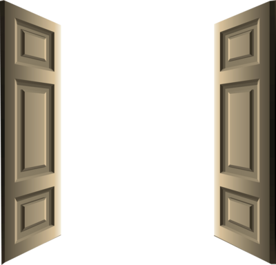
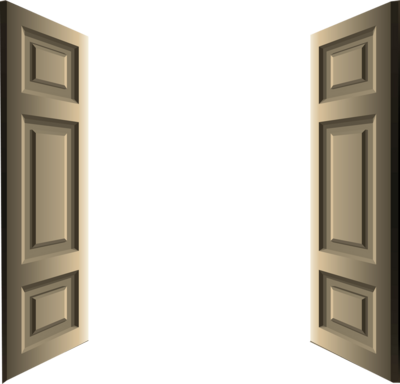

Ali Askari
I watched, dreadfully, as the minute hand ticked towards the end of the school day. I don’t want to go home. My home isn’t a home at all; my home is meaningless spent hours arguing, my home is a jail that binds my freedom onto a spike, my home is a place to remind me of my bashfulness.
*RING RING RING*
I swung my backpack over my shoulders begrudgingly as the rest of the class streamed out the classroom. How does it feel? To have a place you can return to where you can let your thoughts fly?
I guess I wouldn’t know.
I stepped onto the sidewalk that traced to my house. I walked as slow as I could, trying to delay what would be waiting for me. The long walk was the calmest part of my day. It’s so peaceful, a repetition of legs and arms moving in sync, one in front of the other, over and over again. Today was different though. I couldn’t silence the panic brooding in my head. My heart bounced higher with every step I took.
I started counting my steps to halt the anxiety rising in my head. The pale yellow walls of the house faded into view as I crossed the street onto the avenue that lead to my house.
500, 501, 502, 503, 504, 505, 506, 507.
I took in a deep breath before opening the front door. The noise of the door had made my arrival home known to every neighborhood in the vicinity. I tiptoed and tried to sneak into my bedroom before…
“Wait,” My mom stopped me, stepping out of the kitchen. “Come here.” I followed her silently, there was no way to get out of it now.
“I’ll be the mature one here and try to stop this meaningless squabble between us for once,” breathed mom. My eyes widened, brimming with hope. Was she going to finally respect my decisions? I stayed silent. For once, I was eager to hear her next words.
“Really?” My eyes lit up at those words.
“Yes, Ali.” She paused, as I struggled to contain my excitement. “I’ll let you choose what college you want to attend.”
Abruptly, all my hopes died down. Of course she was going to keep her stance. I suddenly regretted getting my hopes up, as a splash of water took out the fire in my eyes.
Mom saw the shift in my expression, “Hey! You’re not seeing the sacrifice that I'm paying by giving you that choice.”
“You know that I don’t want to go to college, mom, I--”
“That isn’t your decision to make. I’m not letting you ruin your life because you have a fantasy about owning a company. Now you can either--”
“I’M EIGHTEEN AND I CAN MAKE MY OWN CHOICES--” I screamed in a rush, eyes suddenly dripping with untamable tears.
“AS LONG AS YOU LIVE IN THIS HOUSE, YOU WORDS AREN'T WORTH SHIT.” Mom overlapped my voice.
“Why can’t you understand?” I pleaded, my voice pained, losing its power, “When will you understand that MY LIFE BELONGS TO ME?”
“DON’T give me all that bullshit about choice! You wanna choose? Pay your own damn bills and buy your own food!” Mom’s hard eyes flipped every switch in my head. I rushed back to my bedroom.
“THE DOOR IS RIGHT THERE IF YOU WANT TO CHOOSE.” Her mockery rang down the corridor as I slammed my bedroom door shut. No, I want to go back out. I want to leave this prison and make her eat her words, but something stopped me. I dug my heart and I knew what it was -- fear. Fear of change, uncertainty. Fear of giving up everything and starting over.
I kneeled, my strength and my voice giving out. You’re so weak, so, unimaginably, weak, I told Ali and her childish dreams.
I lifted my hands feebly, and traced every wrinkle, every crease, every scar. They were rough, sore from holding books at night in awkward positions. My hands were so familiar to me, carrying every part of me through for as long as I can remember.
Yet, I had been so cruel to them.
I traced the patterns on my palm again, calming my cries down. Suddenly, they started talking to me, in a voice clearer than I’d ever heard. Maybe, for once in my life, I should do what my hands want.
I glanced at the ajar windows across from where I kneeled. Empowered, I stood up, and walked towards it. My hands found their place along the window edges, and with the pain of a thousand tears, they wrenched it open, inch by inch, until it was wide enough for me to crawl through.
The never-ending cry has neither sound, nor tears. Rather, it is just a burning throb that stays trapped inside. Even though I’m broke, homeless, and a high-school dropout, now -- I’ve finally stopped crying.